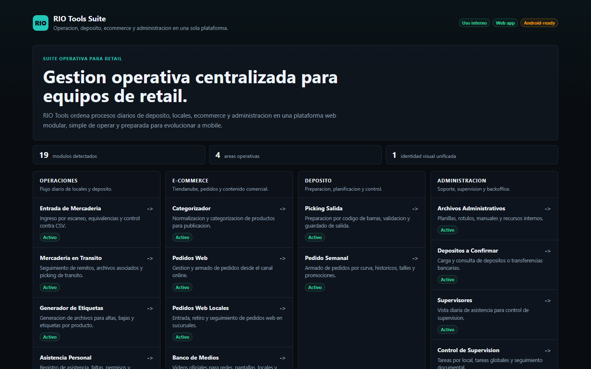
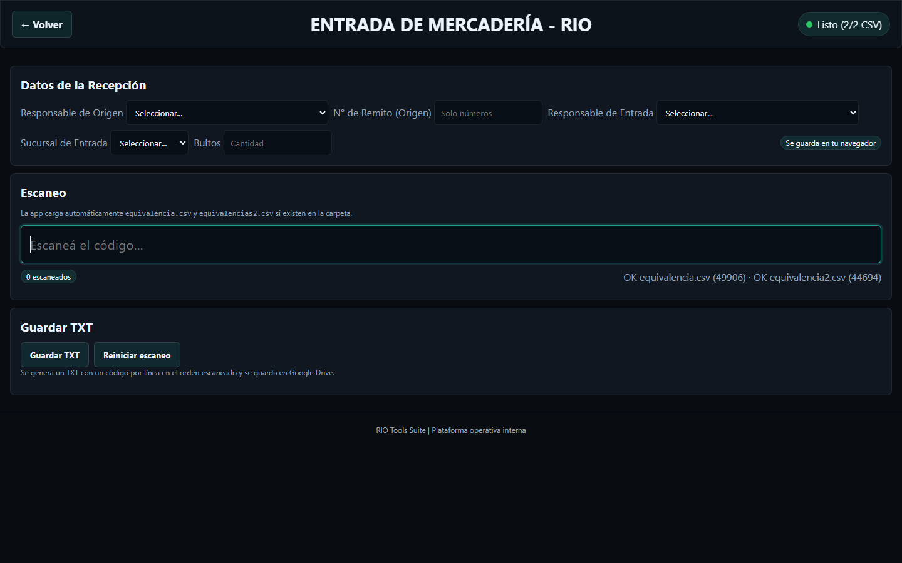
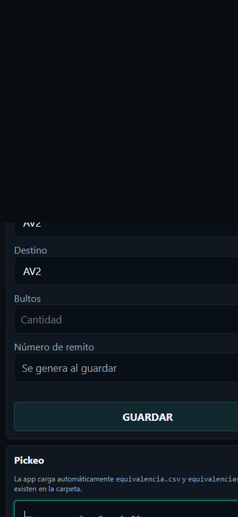
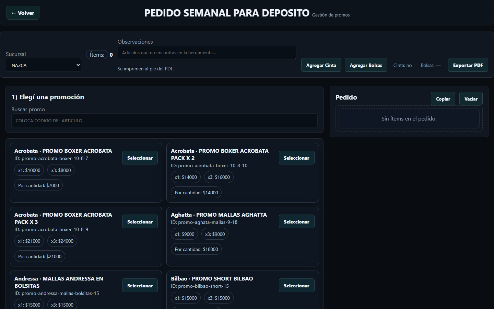
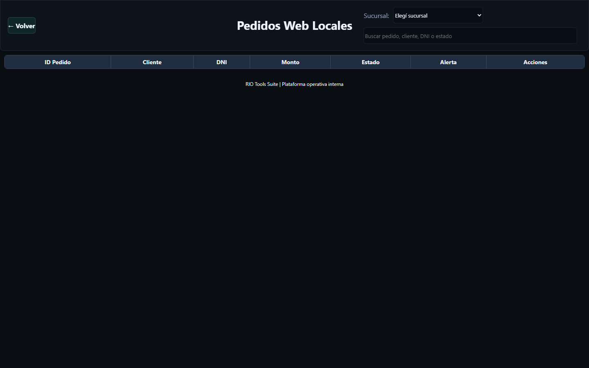
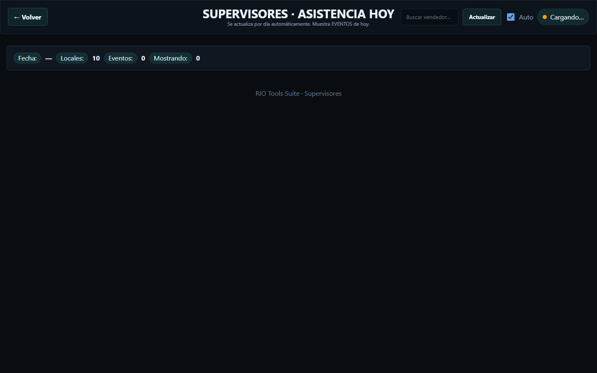
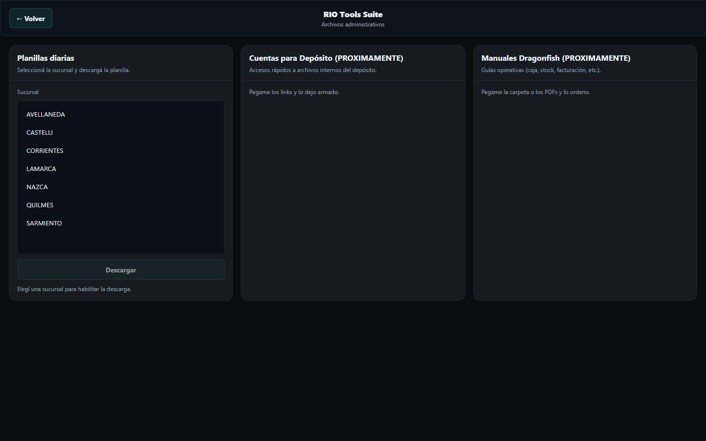

Presentacion comercial
Una plataforma web modular que digitaliza tareas diarias de sucursales, deposito y backoffice con una identidad visual unificada, flujos simples y foco en uso real operativo.
Vision general

Mapa funcional
Entrada de Mercaderia
Mercaderia en Transito
Generador de Etiquetas
Asistencia Personal
Control de Remitos
RIO ShipNow Interno
Categorizador
Pedidos Web
Pedidos Web Locales
Banco de Medios
Picking Salida
Pedido Semanal
Archivos Administrativos
Depositos a Confirmar
Supervisores
Control de Supervision
Sistemas
Apercibimientos
Pedido de Carteleria
Operaciones

Deposito mobile

Planificacion comercial

Ecommerce

Supervision

Administracion

Valor para comprador
RIO Tools reduce dispersion de planillas, unifica flujos repetitivos y permite que cada area trabaje con pantallas especificas para su tarea diaria. La suite ya separa modulos por area, mantiene una identidad visual coherente y elimina procesos descartados del acceso principal.
El proyecto puede presentarse como plataforma lista para adopcion interna: modular, web, adaptable a mobile y con roadmap claro hacia app Android para deposito y escaneo.
Escaneo, busqueda, validacion y exportacion reducen tareas repetitivas.
Estados, remitos, asistencia, depositos y supervision quedan visibles.
Diseño minimalista y consistente para que el equipo lo use sin friccion.
Proximos pasos
Auditoria final de responsive, iconografia y microcopys por modulo.
Definir permisos, almacenamiento, backups y trazabilidad por usuario.
Convertir la suite en PWA para uso desde dispositivos internos.
Empaquetar Picking Salida y flujos mobile para lector Android.
Cierre
La suite ya muestra una base clara para operar, presentar y evolucionar: web unificada, modulos activos, experiencia mobile en deposito y una ruta directa hacia aplicacion Android.